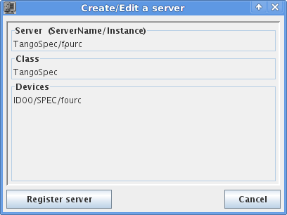

TangoSpec is a TANGO device server which provides a TANGO interface to SPEC.
Contents:
TangoSpec consists of a TANGO device server called TangoSpec. The device server should contain at least one device of TANGO class TangoSpec.
All other devices (SpecMotor, SpecCounter) can be created dynamically on demand by executing commands on the TangoSpec device.
This chapter describes how to install, setup, run and customize a new TangoSpec server.
For production environment, use the code from the bliss installer package called TangoSpec.
For development, you can get get the code from ESRF gitlab:
$ git clone git@gitlab.esrf.fr:andy.gotz/tango-spec.git
Go to jive and select Edit ‣ Create server. You will get a dialog like the one below:
The Server field should be TangoSpec/<instance> where instance is a name at your choice (usually the name of the spec session, ex: TangoSpec/fourc).
The Class field should be TangoSpec.
The Devices field should be the TANGO device name according to the convention in place at the institute (ex: ID00/spec/fourc).
Press Register server.
Select the Server tab, go to node TangoSpec/<instance>/Spec/<device name>/properties. Add a new property called Spec by clicking the New property button. Set the Spec property value to the spec session name (example: machine01:fourc).
Now go to the command line and type (replace fourc with your server instance):
$ TangoSpec fourc
TangoSpec server can run with auto discovery enabled or disabled.
When auto discovery is enabled, every time the TangoSpec server starts it will synchronize the list of motors and counters with the list provided by spec. All motors and counters from spec will be automatically exposed as TANGO devices.
When auto discovery is disabled, tango motors and counters must be created manually (see Expose a motor and Expose a counter).
Auto discovery is disabled by default unless you set the AutoDiscovery property of the Spec device has been set to True.
Note
When a Spec TANGO server is running, to switch auto discovery mode, you need to change the value of the AutoDiscovery and execute the Init command on the Spec TANGO device to allow changes to take place.
It is possible to synchronize the list of TANGO spec motors and counters with the list of motors and counters provided by Spec. To do this, simply execute the command Reconstruct provided by the Spec TANGO device server. After executing this command all motors and counters exported by Spec will be present as TANGO devices. Example:
>>> import PyTango
>>> fourc = PyTango.DeviceProxy("ID00/SPEC/fourc")
# tells you the list of existing spec motors
>>> fourc.SpecMotorList
['energy', 'ffsamy', 'ffsamz', 'istopy', 'istopz']
>>> # tells you which spec motors are exposed as tango motors
>>> fourc.MotorList
[]
>>> fourc.Reconstruct()
>>> fourc.MotorList
['energy (ID00/Spec/energy)',
'ffsamy (ID00/Spec/ffsamy)',
'ffsamz (ID00/Spec/ffsamz)',
'istopy (ID00/Spec/istopy)',
'istopz (ID00/Spec/istopz)']
>>> # now there is a Tango device of class SpecMotor for each motor in the spec session:
>>> energy = PyTango.DeviceProxy("ID00/SPEC/enery")
Each motor in SPEC can be represented as a TANGO device of TANGO class SpecMotor.
When you setup a new TangoSpec device server it will not export any of the SPEC motors (unless : ref:auto discovery <tangospec_auto_discovery>.
You have to specify which SPEC motors you want to be exported to SPEC. To export a SPEC motor to spec just execute the TANGO command AddMotor() on the TangoSpec device. This can be done in Jive or from a python shell:
>>> import PyTango
>>> fourc = PyTango.DeviceProxy("ID00/SPEC/fourc")
>>> fourc.SpecMotorList
energy
ffsamy
ffsamz
istopy
istopz
>>> # creates a SpecMotor called 'ID00/SPEC/energy' and with alias 'energy'
>>> fourc.addMotor(["energy"])
>>> energy = PyTango.DeviceProxy("energy") # or PyTango.DeviceProxy("ID00/SPEC/energy")
>>> # creates a SpecMotor called 'a/b/ffsamy' and with alias 'ffsamy'
>>> fourc.addMotor(["theta", "a/b/ffsamy"])
>>> theta = PyTango.DeviceProxy("ffsamy") # or PyTango.DeviceProxy("a/b/ffsamy")
>>> # creates a SpecMotor called 'a/b/istopy' and with alias 'spec_istopy'
>>> fourc.addMotor(["istopy", "a/b/istopy", "spec_istopy"])
>>> phi = PyTango.DeviceProxy("spec_istopy") # or PyTango.DeviceProxy("a/b/istopy")
Each counter in SPEC can be represented as a TANGO device of TANGO class SpecCounter.
When you setup a new TangoSpec device server it will not export any of the SPEC counters.
You have to specify which SPEC counters you want to be exported to SPEC. To export a SPEC counter to spec just execute the TANGO command AddCounter() on the TangoSpec device. This can be done in Jive or from a python shell:
>>> import PyTango
>>> fourc = PyTango.DeviceProxy("ID00/SPEC/fourc")
>>> fourc.SpecCounterList
sec
mon
det
c1
c2
c3
>>> # creates a SpecCounter called 'ID00/SPEC/sec' and with alias 'sec'
>>>
>>> fourc.addCounter(["sec"])
>>> sec = PyTango.DeviceProxy("sec") # or PyTango.DeviceProxy("ID00/SPEC/sec")
>>> # creates a SpecCounter called 'a/b/sec' and with alias 'sec'
>>>
>>> fourc.addCounter(["sec", "a/b/sec"])
>>> theta = PyTango.DeviceProxy("sec") # or PyTango.DeviceProxy("a/b/sec")
>>> # creates a SpecCounter called 'a/b/det' and with alias 'spec_det'
>>>
>>> fourc.addCounter(["det", "a/b/det", "spec_det"])
>>> phi = PyTango.DeviceProxy("specdet") # or PyTango.DeviceProxy("a/b/det")
SPEC variables can be exported to TANGO as dynamic attributes in the TangoSpec device.
As a result, a new attribute with the same name as the SPEC variable name will be created in the TangoSpec device.
Example how to expose a SPEC variable called FF_DIR:
>>> import PyTango
>>> fourc = PyTango.DeviceProxy("ID00/SPEC/Fourc")
>>> # expose a variable called 'FF_DIR'
>>> fourc.AddVariable("FF_DIR")
The new TANGO attribute will a read-write scalar string. In order to be able to represent proper data types the string is encoded in json format. In order to read the value of a SPEC variable you must first decode it from json. Fortunately, json is a well known format. Example how to read the value of a previously exposed (see chapter above) SPEC variable called FF_DIR (the variable is an associative array):
>>> import json
>>> FF_DIR = json.loads(fourc.FF_DIR)
>>> FF_DIR
{u'config': u'/users/homer/Fourc/config',
u'data': u'/users/homer/Fourc/data',
u'sample': u'niquel'}
>>> type(FF_DIR)
dict
Notice that the value of FF_DIR is not a string but an actual dictionary.
To write a new value into a SPEC variable the opposite operation needs to be performed. Example:
>>> FF_DIR = dict(config="/tmp/config", data="/tmp/data", sample="copper")
>>> fourc.FF_DIR = json.dumps(FF_DIR)
To run a macro use the ExecuteCmd() command. Example:
>>> fourc.ExecuteCmd("wa")
(nothing will be shown because you are not listening to SPEC output. See Listen to output)
Quick macros can be ran using this synchronous method. Macros that take a long time (ex: ascan) will block the client and eventually a timeout exception will be raised (default timeout is 3s).
To run long macros there are two options:
Tell the TANGO server to start executing the macro asynchronously allowing you to do other stuff while the macro is running. For this use the command ExecuteCmdA().
If you are interested you can monitor if the macro as finished (IsReplyArrived() command) and optionaly get the result of it’s execution (GetReply()). Example
>>> ascan_id = fourc.ExecuteCmd("ascan phi 0 90 100 1.0")
>>> # do my stuff while the ascan is running...
>>> while not fourc.IsReplyArrived(ascan_id):
... # do more stuff
>>> ascan_result = fourc.GetReply(ascan_id)
Note
GetReply() will block until the command finishes.
If you want to be blocked until the macro finishes: First, configure the DeviceProxy timeout to a long time and then execute the macro using the ExecuteCmd() command:
>>> fourc.set_timeout_millis(1000*60*60*24*7) # a week
>>> ascan_result = fourc.ExecuteCmd("ascan phi 0 90 100 1.0")
Just make sure the ascan takes less than a week ;-)
Todo
write Move a motor chapter
Todo
write list to output chapter
A TANGO device server which provides a TANGO interface to SPEC.
Runs the Spec device server
Bases: PyTango.server.Device
A TANGO device server for SPEC based on SpecClient.
Execute a SPEC command synchronously. Use ExecuteCmdA() instead if you intend to run commands that take some time.
| Parameters: | command (str) – the command to be executed (ex: "wa" ) |
|---|
Execute a SPEC command asynchronously.
| Parameters: | command (str) – the command to be executed (ex: "ascan energy 0.1 10 20 0.1" ) |
|---|---|
| Returns: | an identifier for the command. |
| Return type: | int |
Returns the reply of the SPEC command given by the cmd_id, previously requested through ExecuteCmdA(). It waits if the command is not finished
| Parameters: | cmd_id (int) – command identifier |
|---|---|
| Returns: | the reply for the requested command |
| Return type: | str |
Determines if a command executed previously with the given cmd_id is finished.
| Parameters: | cmd_id (int) – command identifier |
|---|---|
| Returns: | True if the command response as arrived or False otherwise |
| Return type: | bool |
Export a SPEC variable to Tango by adding a new attribute to this device with the same name as the variable.
| Parameters: | variable_name (str) – SPEC variable name to be exported as a TANGO attribute |
|---|---|
| Throws PyTango.DevFailed: | |
| If the variable is already exposed in this TANGO DS. | |
Unexposes the given variable from this TANGO DS.
| Parameters: | variable_name (str) – the name of the SPEC variable to be removed |
|---|---|
| Throws PyTango.DevFailed: | |
| If the variable is not exposed in this TANGO DS | |
Adds a new SpecMotor to this DS.
motor_info must be a sequence of strings with the following options:
spec_motor_name [, tango_device_name [, tango_alias_name]]
Examples:
spec = PyTango.DeviceProxy("ID00/spec/fourc")
spec.AddMotor(("th",))
spec.AddMotor(("tth", "ID00/fourc/tth", "theta2"))
| Parameters: |
|
|---|---|
| Throws PyTango.DevFailed: | |
If SPEC motor does not exist or if motor is already exported |
|
Removes the given SpecMotor from this DS.
| Parameters: | motor_name (str) – SPEC motor name to be removed |
|---|
Examples:
spec = PyTango.DeviceProxy("ID00/spec/fourc")
spec.RemoveMotor("th")
Adds a new SpecCounter to this DS.
counter_info must be a sequence of strings with the following options:
spec_counter_name [, tango_device_name [, tango_alias_name]]
Examples:
spec = PyTango.DeviceProxy("ID00/spec/fourc")
spec.AddCounter(("sec",))
spec.AddCounter(("det", "ID00/fourc/detector", "detector"))
| Parameters: |
|
|---|---|
| Throws PyTango.DevFailed: | |
If SPEC counter does not exist or if counter is already exported |
|
Removes the given SpecCounter from this DS.
| Parameters: | counter_name (str) – SPEC counter name to be removed |
|---|
Examples:
spec = PyTango.DeviceProxy("ID00/spec/fourc")
spec.RemoveCounter("th")
Exposes to Tango all counters and motors that where found in SPEC.
Bases: PyTango.server.Device
A TANGO SPEC motor device based on SpecClient.
Bases: PyTango.server.Device
A TANGO SPEC counter device based on SpecClient.